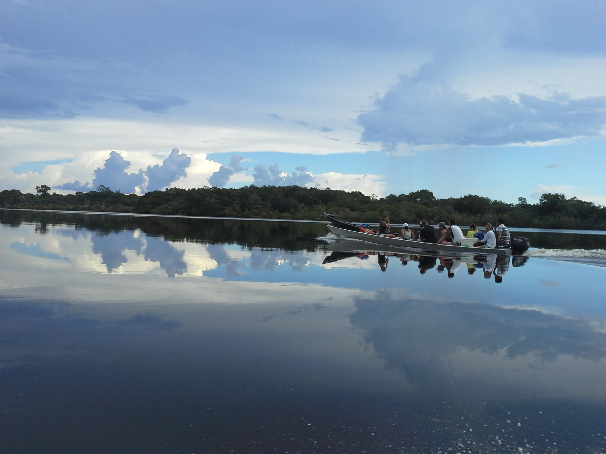
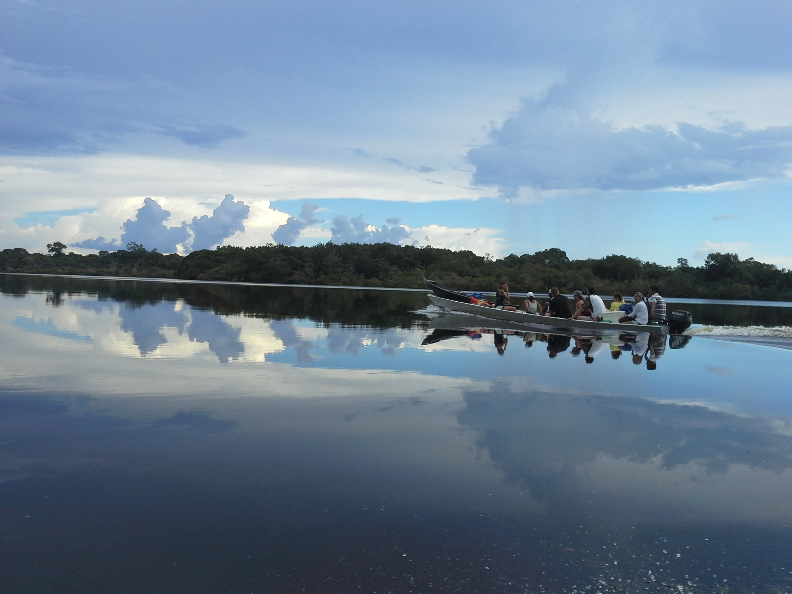

Amazônia
Descrição
A Amazônia é o maior bioma do Brasil e a maior floresta tropical do mundo. Abriga a maior biodiversidade do planeta e possui uma importância fundamental para o equilíbrio climático global. É conhecida como o "pulmão do mundo" devido à sua capacidade de produção de oxigênio e absorção de dióxido de carbono.
Localização
Ocupa cerca de 49% do território brasileiro, estendendo-se pelos estados do Acre, Amapá, Amazonas, Pará, Roraima, Rondônia, Mato Grosso, Maranhão e Tocantins. Além do Brasil, a floresta amazônica também está presente na Bolívia, Colômbia, Equador, Guiana, Guiana Francesa, Peru, Suriname e Venezuela.
Clima
Predominantemente equatorial quente e úmido, com temperaturas médias entre 24°C e 26°C durante todo o ano. A umidade relativa do ar é alta, geralmente acima de 80%, e a precipitação anual varia entre 1.500 mm e 3.000 mm, dependendo da região. As chuvas são bem distribuídas ao longo do ano, com um período mais chuvoso de dezembro a maio.
Fauna
A Amazônia abriga uma diversidade extraordinária de animais, com mais de 2.000 espécies de peixes, 430 de mamíferos, 1.300 de aves, 400 de anfíbios e 380 de répteis. Entre os animais mais emblemáticos estão o boto-cor-de-rosa, onça-pintada, arara-azul, uacari-branco, peixe-boi, harpia, tucano, jacaré-açu e diversas espécies de macacos como o macaco-prego e o uakari.
Flora
A vegetação amazônica é extremamente rica, estimada em mais de 40.000 espécies de plantas. As árvores formam diferentes estratos, podendo alcançar até 65 metros de altura. Espécies notáveis incluem a seringueira, castanheira-do-pará, açaizeiro, pau-rosa, mogno, cedro, vitória-régia, andiroba, copaíba e uma enorme variedade de orquídeas, bromélias, samambaias e plantas medicinais.